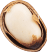
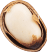

Французская
кухня
для мужчин
кухня
Лягушачьи лапки
О своей питательной ценности лягушачьи лапки, также как и улитки, не уступают мясу, по нежности вкуса напоминают курицу, но при этом на их употребление в пищу во время поста нет запрета, поэтому монахи и начинали заменять ими рыбу.
Крестьяне продолжили традицию. Именно из-за любви к этому блюду в XIV веке англичане прозвали французов «лягушатниками». В наше время лягушачьи лапки считаются деликатесом, который можно отведать в лучших ресторанах.
Багет
Одна из версий происхождения багета гласит, что во время строительства французского метро в XIX веке среди рабочих регулярно возникали ссоры и конфликты из-за того, что кто-то из них мог забыть нож и испачкать хлеб грязными руками или неровно отломить.
Чтобы разрешить их, пекари создали длинный, легко ломающийся батон, получивший название багет. В 1993 году вышел «декрет о хлебе», в котором прописаны критерии настоящего багета, включая степень прожарки корочки и качество мякоти.
Трюфель
Каждый год с ноября по конец марта открывается сезон охоты на трюфель, самый дорогой и деликатесный гриб в мире. В качестве помощников, помогающих обнаружить его, используются собаки. Однако до недавнего времени охотники использовали для этих целей так называемых «трюфельный свиней», это некрупные домашние свинки специально обученные для охоты. Но поскольку они неохотно отдавали добычу, их заменили на охотничьих собак.

Мясо
по-французски
Впервые мясо по-французски было приготовлено в Париже для знаменитого русского графа Орлова, который являлся фаворитом императрицы Екатерины. Рецепт был разработан на основе одной из французских готовых запеканок и с тех пор практически не изменился. Он представляет собой слои из мяса, картофеля, лука, сыра и майонеза. Несмотря на название блюда, «мясо по-французски», во французских кафе и ресторанах его найти практически невозможно.